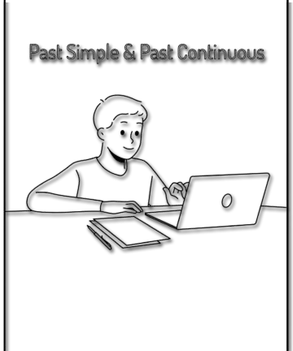

What is the past Continuous
The Past Continuous is an English verb tense used to describe actions that were occurring at a specific time in the past.
 The Past Continuous is used to describe actions that occurred at a specific and known time in the past or over a period of time.- Yesterday at 10 p.m. - Yesterday at 10 p.m., I was climbing the tree. - I was climbing a tree.
- At 5 o'clock yesterday evening - At 5 pm yesterday, my sister was flying from Sydney. - my sister was flying from Sydney.
- At the same time two years ago - At the same time two years ago, we were visiting my parents. - we were visiting my parents.
- She was still dancing at midnight. - She was still dancing at midnight.
- Last night at 1 a.m. - Last night at 1 a.m., I was preparing my speech. - I was preparing my speech.
- She was cleaning the house when the phone rang. - She was cleaning the house when the phone rang.
- John was cooking dinner when he suddenly cut his finger. - John was cooking dinner when he suddenly cut his finger.
- Helen was using the blender so she didn't hear you come in. - Helen was using the blender, so she didn't hear you come in.
- When Dana broke the Cup - When Dana broke the cup, I was making some cakes. - I was making some cakes.
A precise moment in the Past Continuous Tense can be specified or interrupted by another, shorter action, expressed in the Simple Past Tense.
The words while and when highlight different parts of the sentence. Usually, after while follows the Past Continuous, and after when, the Past Simple. While I was typing my report, everyone left the office. - everyone left the office. While I was eating my soup, I came home. - he came home. I was eating my soup when he came home. - I was eating my soup when he came home.
Simultaneous actions in the past
The Past Continuous is used to describe several actions in the same sentence that occurred simultaneously. She was doing her makeup while she was talking over the telephone. - She was putting on makeup while talking on the phone. They were drinking a cup of coffee while they were sitting at that restaurant. - They were having a cup of coffee while sitting in that restaurant. We were eating delicious pasta while we were watching a new cartoon. - We were eating delicious pasta while watching a new cartoon. I was playing the guitar and Jane was playing along the drum. - I played the guitar and Jane accompanied on the drum. Children were playing games, eating sweets and drinking Cola. - The children played games, ate sweets and drank cola.How is it formed?
It is formed using the auxiliary verb "was" or "were" (depending on the subject) followed by the main verb in its -ing form.
Subject + was/were + verb in -ingI/he/she/it uses was.
you/we/they usa were.